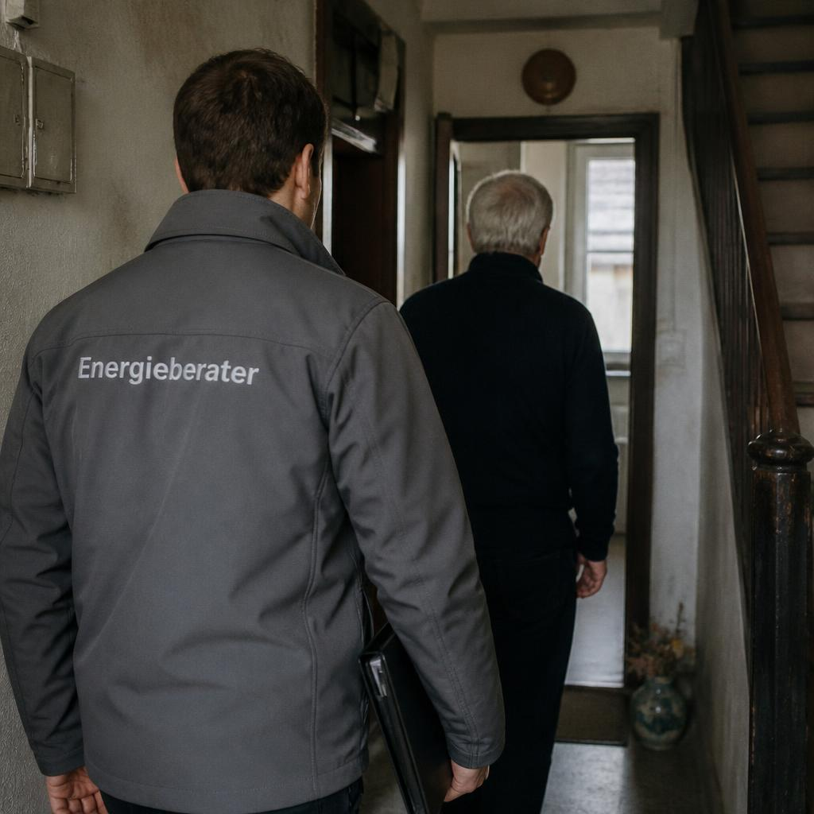
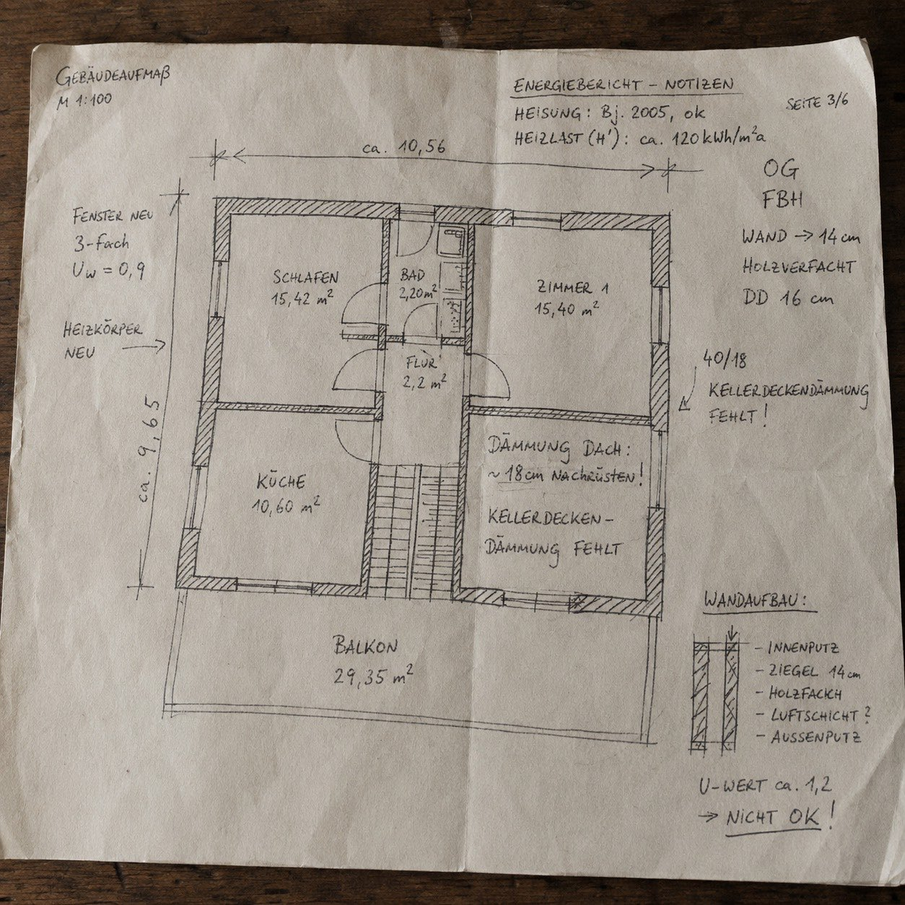
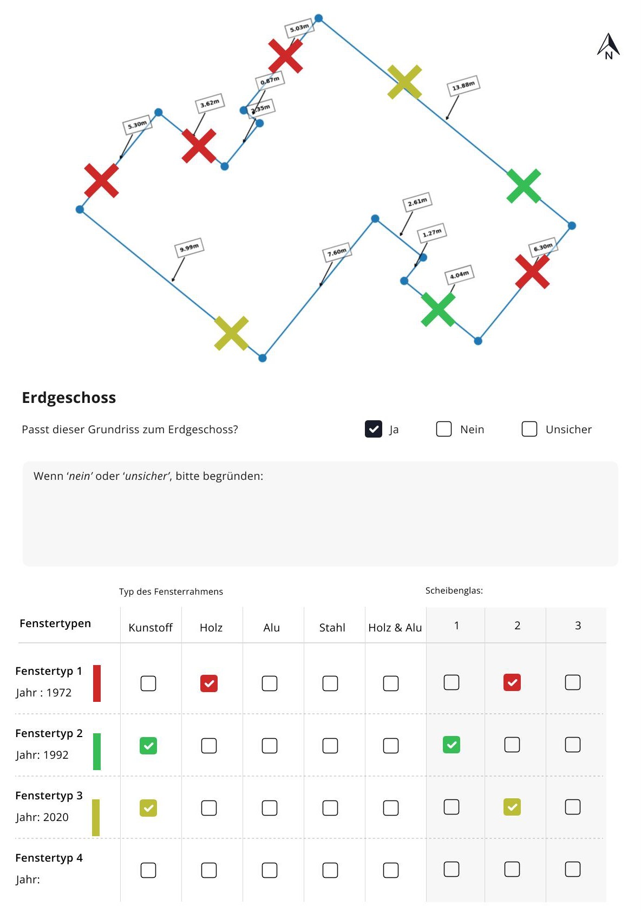
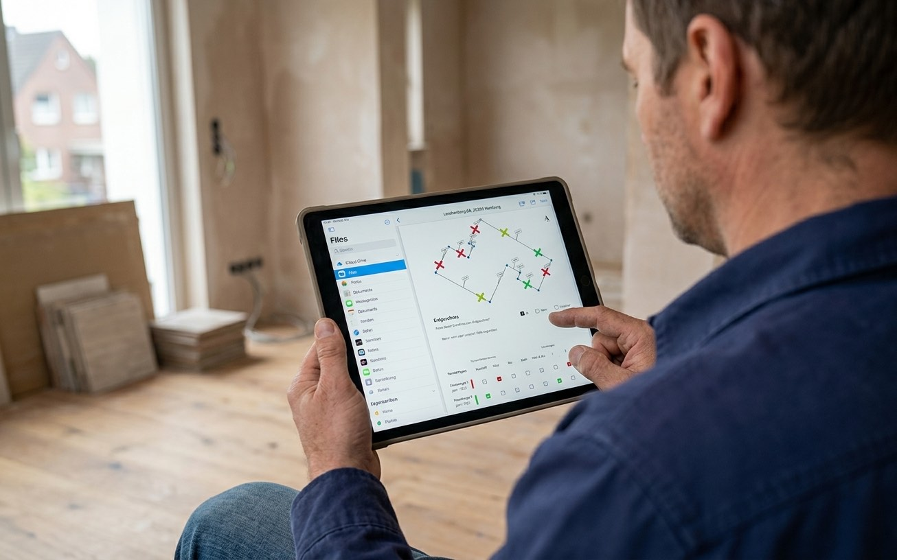

Data accuracyMore consistent building data, with fewer errors reaching the energy model.
← All work
Climate Tech · Field Operations · Customer Journey
Enter
A climate-tech startup helping German homeowners plan energy-efficient renovations. I designed the advisor tool used in the field and the customer journey, from the first on-site visit to the official retrofit report.

iSFP
Official government document
generated from field data
generated from field data
2D
Live floor plans with
window-level precision
window-level precision
1 visit
Survey, energy model and findings,
before anyone leaves the house
before anyone leaves the house
The context
Billions in renovation funding.
The data to unlock it
didn’t yet exist.
Enter helps German homeowners navigate energy-efficient renovations, from insulation and heat pumps to new windows and the government funding that can cover much of the cost. Through the Bundesförderung für effiziente Gebäude (BEG), homeowners can receive subsidies of up to 70% for certain measures. To qualify, they need an Individual Renovation Roadmap (iSFP) prepared by a certified energy advisor following an on-site assessment.
That visit is the foundation of everything that follows: the energy model, the retrofit recommendations it generates, and the official report homeowners need to claim funding.
When I joined, advisors relied on paper forms, handwritten notes, and fragmented workflows. Data was inconsistent, difficult to digitise, and unsuitable for a scalable AI pipeline. There was no dedicated product for advisors collecting information in the field, or for homeowners trying to understand their renovation options and next steps.
I led the design of both experiences: a tablet-first field app that guides energy advisors through on-site assessments, and a digital customer report that helps homeowners understand recommendations, compare renovation scenarios, and move confidently toward funding and implementation.
Understanding the work
Two hours in the house.
A week to the answer.
I rode along on appointments: several assessments start to finish, following advisors from the meter cupboard to the loft, watching what they measured, what they wrote down, and what they left until later. Then I followed the same data backwards: sitting with the team who turned those notes into an energy model, and listening to the calls where the results were finally presented to the homeowner.
The visit took around two hours in the house. The model took days at a desk. The homeowner heard the outcome on a phone call a week later, long after the advisor had left their kitchen.
Three stages, three teams, and a handover at every seam. Each seam was somewhere data could go missing or interest could cool, and none of them were visible from a desk in Berlin.

Ride-alongs: following the assessment through the house, room by room

Page three of six: room areas, wall build-up, U-value. All of it rekeyed at a desk later
Rethinking data collection
Paper first.
Then the engineering.
The obvious answer was a digital floor plan the advisor could draw on. But building one properly meant cadastral data, a drawing surface, live geometry and validation. Months of engineering, and I didn’t want to spend them finding out that the idea underneath didn’t survive a real house.
So I made the cheapest possible version of it. A pre-populated 2D footprint, pulled from cadastral records and dimensioned, dropped into the Files app on the advisor’s own tablet and marked up with a pencil during real appointments. No code. An afternoon to change.
It carried two ideas, and I had very different confidence in them.
The first was the footprint itself. Could an advisor work from a plan they hadn’t drawn? Was the registered geometry actually right? Did starting from it save time? I expected this to hold, but it was the expensive thing to build, which made it the thing worth proving first.
The second was speculative. Rather than specifying every window one by one, the advisor defined three or four window types by year, frame material and glazing, then tagged positions on the plan by colour. Far less manual effort, but a complete rethink of how the survey worked, and I had no idea whether what came back would still be good enough for the modelling team.

One sheet per floor: the footprint, windows tagged by type, and one blunt question: does this plan match the floor you are standing on?

Marked up in the Files app on the advisor’s own tablet. Nothing was built to run this test
Every completed sheet went to two audiences: the advisors who had to work this way in someone’s attic, and the modelling team who had to build an energy model out of whatever came back. A version that satisfied one and failed the other wasn’t worth building, which is the entire reason both were in the room for each round.
The footprint held
Advisors could work from a plan they hadn’t drawn. The registered geometry was close enough to correct on site rather than re-measure from scratch, and starting from something beat starting from nothing. That was the green light to build it properly.
So did the window types
The idea I trusted least turned out to be the bigger win. Defining three or four types and tagging positions by colour turned the most tedious stretch of the survey into something quick and almost painless. The modelling team got what they needed too. Only position and size still had to be captured opening by opening.
Paper still leaked
Whatever the format, a field skipped in the house was a field missing at the desk. Structure on a page can invite completeness but it cannot enforce it. That was the argument for a real tool rather than a better form.
That reframed the brief. Not “digitise the form”, but: make capture fast enough for the advisor and structured enough that the AI can turn it into findings the homeowner sees before anyone leaves the house. The compliant iSFP still needed finishing afterwards. The conversation no longer had to wait for it.
End to end
Field data. AI model.
Government document.
One continuous flow.
Field Visit
Advisor conducts the assessment on site using a tablet
→
Building Survey
Rooms, floors, construction materials, windows, heating systems and a detailed floor plan are captured
→
AI Processing
The assessment data is analysed to generate the building’s energy model and recommended retrofit measures
→
Customer Report
The advisor reviews the results with the homeowner: assessment, recommended measures, expected savings and available subsidies
→
Final iSFP
The agreed measures are compiled into the official Individual Renovation Roadmap, ready to support government funding applications
Fast processing.
The advisor still decides.
Processing was quick enough that there was no waiting state to design. The real question was what the advisor could do with the numbers coming back. Chief among them is the U-value: how much heat escapes through a square metre of wall, roof or window. The lower the figure, the better insulated the element, and the whole energy model rests on it.
So rather than returning U-values at the end, we calculated them live and showed them updating as construction details were entered. Every value stayed editable. An advisor standing in front of an opened-up wall could override the calculated figure with their own, and the model took their number instead. The AI set the default. The person in the building had the last word.
An override was a signal, not an error. Where advisors corrected the same assumption repeatedly, that was a defect in the model worth feeding back.
Appointment management
Everything the advisor needs
before they
knock on the door.
The appointment screen was the starting point for every property visit. Before tapping “Start appointment”, advisors could review the homeowner’s details, view the property on a map, check the estimated building size, and quickly call the client or open navigation. The iSFP assessment remained intentionally locked. Starting the appointment marked the beginning of the official assessment and unlocked the data collection flow.
Once the assessment data had been uploaded, the same screen reflected the appointment’s completion and unlocked the customer report. It could only be generated after every required section of the survey had been completed and submitted, so every recommendation rested on a complete, validated dataset.

Before: data locked, “Termin starten” visible

After: full data unlocked, iSFP ready
Building data capture
Every house is different.
Every detail matters.
The field tool was structured around the iSFP format: house data, systems, floors and rooms, and construction. Advisors navigated between tabs, drilling into each floor and room in turn. Nothing was free-text where it could be structured: dropdowns, toggles, and preconfigured options kept data clean and consistent for the AI model downstream.
Each section followed the same pattern: enter data, take photos if relevant, move on. The advisor always knew where they were in the survey and exactly what was left. On a 186m² detached house, that mattered.
01
House Data
Year built, footprint, energy costs, living area
02
Systems
Heating, hot water, ventilation, renewables
03
Floors & Rooms
Each storey: room count, area, windows, heating status
04
Construction
Walls, insulation, roof, basement: materials & U-values
Floor and room structure: each storey drilled into in sequence
Data confirmation: all building data reviewed before submitting to AI processing
The floor plan feature
Window-level accuracy.
Built into the
floor plan.
Windows are one of the most consequential variables in an energy model, and the paper trials had already settled the shape of the answer: place each opening on the plan, but pull its specification from a handful of pre-defined types rather than re-entering it every time. Their position, dimensions, and glazing spec all affect the U-value of the surrounding wall, which directly influences which retrofit measures make financial sense and which don’t. Getting this wrong skews the whole recommendation downstream.
The floor plan feature pulled in a pre-populated 2D footprint from cadastral and satellite sources, then let advisors place each window directly on the plan, dragging it to the correct wall, entering dimensions, confirming glazing type. One spatial interaction replaced three separate form fields. Across a full survey, that took around 25% off the time spent on site: enough for an advisor to fit an extra appointment into the day.
The building footprint also served a second purpose: advisors could flag discrepancies between the registered data and what they observed on site, feeding corrections back into the dataset for future visits. Over time, the pre-populated data became more reliable, and surveys arrived at the desk far more complete: data completeness rose from 80% to 95%.
Placing a window on the 2D floor plan: position, size and glazing confirmed in one step
The customer report
Field data becomes
a plan a homeowner
can trust.
Once the field survey was submitted, the AI processed the assessment data and generated a draft report within seconds. Rather than returning for a second visit, the advisor stayed with the homeowner and used the report immediately to review the findings together.
I designed this part of the product from the ground up: a structured digital report that guided the conversation and helped the homeowner choose between the available retrofit options. Together they confirmed which measures went into the final Individual Renovation Roadmap (iSFP), the document behind the funding application.
The report
- 01 Future outlook Rising energy costs in the years ahead, and the subsidies available.
- 02 Current assessment The property’s energy performance today, and its savings potential.
- 03 Renovation roadmap Measures reviewed and chosen, ranked by saving, cost and suitability.
- 04 Your next steps When the iSFP arrives, and the quote comparison service that follows.

Future outlook
The cost of doing nothing
The report opened with energy prices rather than renovation costs. Projected gas, oil and electricity rates ran out to 2064, set against what this household was already spending each year. It gave the rest of the conversation a baseline: not what a retrofit costs, but what standing still costs.

Current status
Where the building stands today
Year built, floor area, heat source and annual consumption, drawn straight from the survey the advisor had completed minutes earlier in the same house. Beside it, the current energy class and the class the building could realistically reach. Homeowners recognised their own property here, which is what made the numbers credible.

Renovation measures
Every measure, ranked
The AI’s full set of recommendations in one table: annual savings, payback period, cost and a recommendation rating for each measure. Ticking a measure updated the totals along the bottom, so the pair could assemble a package and watch the combined saving, energy class and subsidy move as they went.

Renovation details
What one measure does on its own
Opening a measure showed it in isolation: what it saves, what it costs, the subsidy it attracts, the payback period and the energy class it moves the building to. This was usually where the decision happened.
Product metrics
How success was measured.
Time on siteReducing time spent on property visits without sacrificing data quality.
iSFP turnaroundShortening the time from site visit to completed iSFP.
Retrofit salesHelping more homeowners move forward with recommended measures.
25%
Less time per on-site survey,
enough for one more appointment a day
enough for one more appointment a day
80 → 95%
Data completeness on
surveys reaching the energy model
surveys reaching the energy model